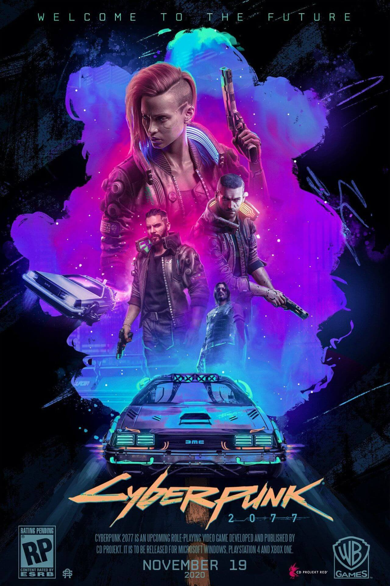
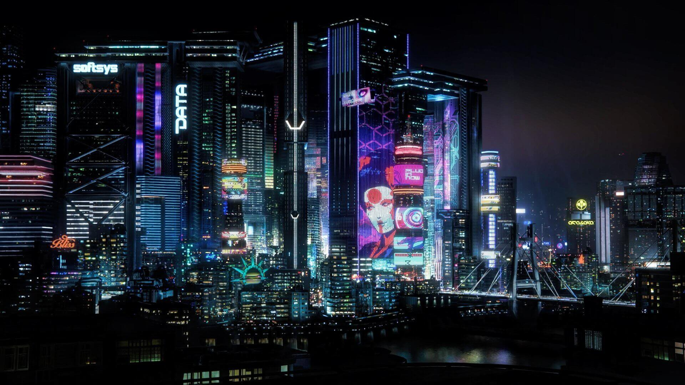
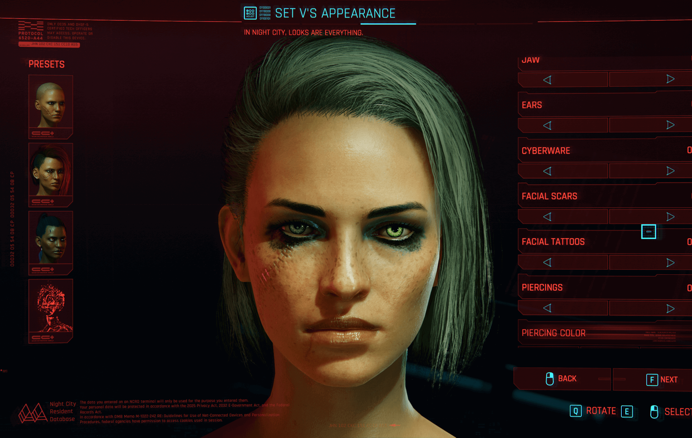
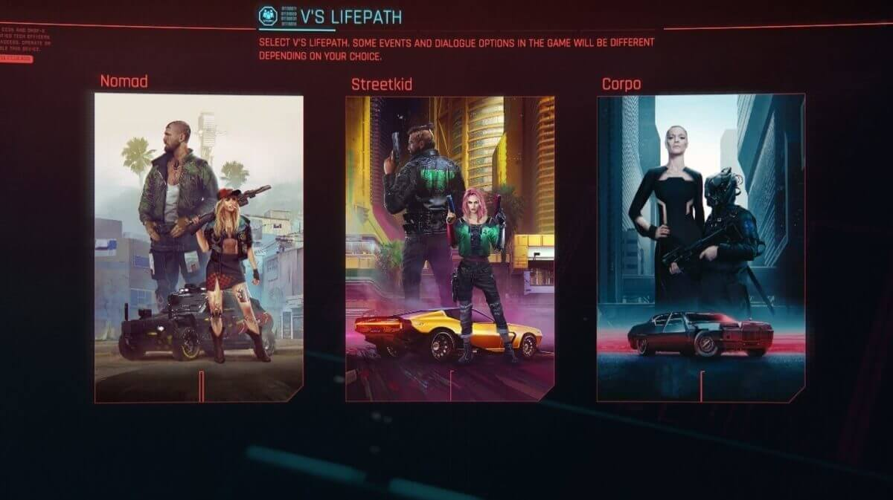
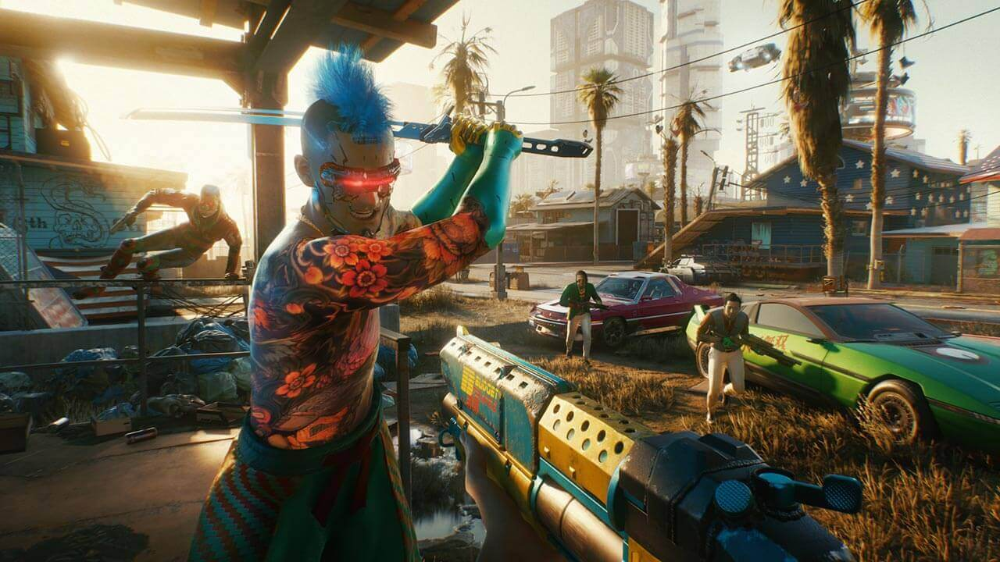
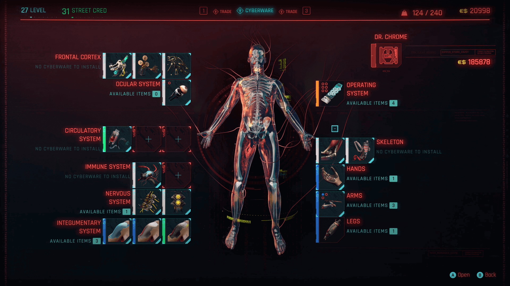
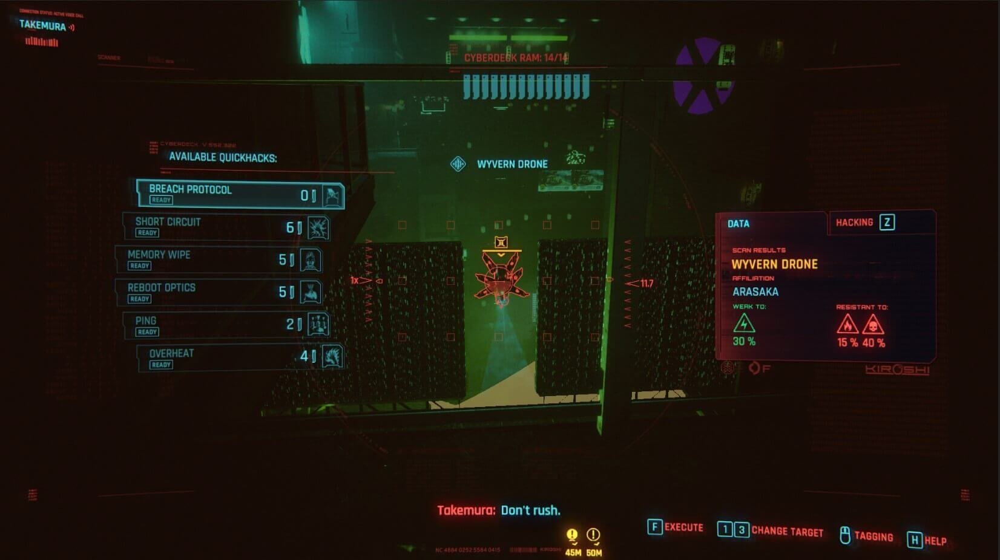
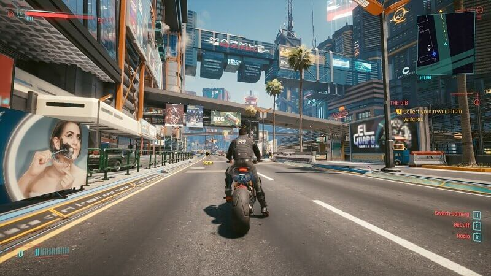

Cyberpunk

Aviso: Este análisis se ha hecho jugando solo la versión de PC
Tras ocho años de espera y muchísimos retrasos CD Projekt lanzo Cyberpunk 2077, su ultimo trabajo basado en el juego de rol Cyberpunk 2020 de Mike Pondsmith, un RPG que en mi opinión pone patas arriba el género con una adaptación extraordinaria que capta toda la esencia del juego de mesa original para ofrecernos uno de los títulos más inmersivos de los últimos años logrando una adaptación única, llena de alma, con historias muy bien narradas, personajes carismáticos y una gran cantidad de contenidos.
Trailer/Gameplay
Los cuentos de la calle de Night City.
En lo nuevo de CD Projekt cambiamos completamente de registro y del mundo de fantasía que tuvimos en la saga The Witcher y pasamos al extremo contrario. Un universo de ciencia ficción que se ambienta en un futuro alternativo en el año 2077 en la enorme ciudad de Night City, una urbe obsesionada con el dinero, el poder, los ciberimplantes y una gloria mitificada con hacerse un nombre en las calles de la ciudad para convertirse en leyenda viva o muerta.
Nosotras tomamos el papel de V, una "Merc" (El personaje puede ser femenino, masculino o no binario) que poco a poco va labrándose una reputación en Night City y que se verá envuelta en una historia donde nos encontramos con personajes carismáticos que dejan huella e historias muy bien contadas.
La historia nos encantó tanto por su poder argumental como por todos los temas que trata, desde el arco principal hasta todas las pequeñas subtramas que nos vamos encontrando mientras descubrimos todo lo que ofrece Cyberpunk 2077.

Durante la aventura Cyberpunk 2077 deberemos tomar decisiones incómodas donde la línea entre el bien y el mal no existe. No hay buenos o malos en una ciudad donde escasa la moral y en la que el egoísmo y la ambición están a la orden del día alimentados por mega-corporaciones que lo controlan todo. De hecho, V esta lejos de ser la heroína O héroe como seria en un típico videojuego, V es solo otra Merc, algo que la propia ciudad y el juego nos recuerdan una y otra vez a lo largo de las misiones.
Un punto a destacar es lo bien que están integradas las historias secundarias a lo largo de la partida. Cyberpunk 2077 es un juego que se disfruta mejor sin prisa y sin ponernos el objetivo del "Speedrun". Así, tendremos la posibilidad de ir descubriendo todos sus rincones, secretos y algunos de sus habitantes más carismáticos que nos cuentan historias realmente interesantes y que además pueden tener un peso muy importante en nuestro futuro
También nos encontraremos todo tipo de encargos y actividades desde competir en carreras automovilísticas, combates de boxeo y hasta prevenir robos. Además podemos encontrarnos con una gran cantidad de eventos que nos pueden llevar a nuevas misiones y encontrarnos con conversaciones importantes que pueden ir marcando el rumbo de la historia. Todo esto hace que a nivel de contenidos sea inmenso y que más allá de la duración de la historia principal -unas 25 horas- podamos estar sumergidas en su universo durante decenas sino cientos de horas.
Crea a tu personaje.
A nivel de apariencia nos encontramos con un editor bastante completo que nos permite ajustar con lujo de detalles el aspecto de nuestro personaje: Su peinado, sus tatuajes, implantes visuales, color de ojos, marcas de nacimiento y un montón de opciones para que tengamos una recreación que intente coincidir con lo que hayamos imaginado que será nuestra protagonista.

Tras todo esto podemos distribuir puntos de personaje entre cinco características diferentes (Constitución, Reflejos, Técnica, Inteligencia y Temple), cada una de ellas siendo clave para diferentes aspectos del protagonista como su resistencia, manejo de las armas, su sigilo, su pericia fabricando o manipulando objetos así como su habilidad para hackear dispositivos inteligentes y obtener ventaja de los mismos durante la partida. Además, también tendremos un avanico de habilidades que podemos escoger según el estilo de juego que queramos llevar a cabo durante nuestra vida en Night City.
Antes de empezar la partida podemos elegir nuestro lifepath contando con tres opciones diferentes: StreetKid, Nomad y Corpo, que nos ofrecerán diferentes comienzos en la historia, diversos contactos y opciones de diálogo durante toda la partida, por lo que se trata de una decisión tan capital como la de distribuir bien nuestros puntos o escoger el aspecto con el que queremos cobrar vida.

A medida que completemos contratos y que nos hagamos un nombre en Night City, también veremos cómo sube nuestro nivel de REP (reputación). Esto nos permite desbloquear nuevos trabajos para importantes personalidades de la ciudad, abriendo nuevas historias y misiones disponibles. Además de poder acceder a nuevas historias y misiones gracias a la reputación, un alto nivel nos permite tener otra serie de ventajas como descuentos en tiendas de ropa o la posibilidad de contar con nuevos implantes con los que equipar a V que nos ayudaran a tener cada vez mas habilidades.
En Acción.
La siguiente parte en nuestra línea de comandos de este análisis pasa a lo que Cyberpunk 2077 nos puede ofrecer más allá de la toma de decisiones, de su argumento, de la creación y gestión de nuestro personaje. No estamos ante el mejor juego de disparos, ni ante el título número uno en mecánicas de sigilo, pero cumple todos los apartados lo suficientemente bien como para ofrecernos un título muy completo… salvo en algunos detalles.
Comenzando por el combate, las mecánicas de disparo con el teclado y el mouse no están mal. Tras unos minutos nos terminamos acostumbrando a las formas de apuntar, disparar y cubrirnos. Los peros son que el tiempo para matar a los enemigos se nos hace demasiado largo teniendo en ocasiones que vaciar un cargador completo para matarlos -sin hablar de lo que tarda en recargarse el arma- , además de que el movimiento del personaje y los enemigos durante el combate es en ocasiones muy tosco, lastrando bastante las mecánicas de combate cuerpo a cuerpo que nos parecieron uno de los puntos más débiles de Cyberpunk 2077.

Equipado para el futuro
Relacionado directamente con las mecánicas de disparo nos encontramos con el equipo que podemos llevar encima nuestro. V puede convertirse en una máquina de matar con el equipamiento necesario ya sea en forma de ropa, granadas, armamento de todo tipo, accesorios o ciberimplantes.
Comenzando por lo básico tenemos a nuestra disposición un gran arsenal de armas de todo tipo ya bien sean pistolas, escopetas, granadas, cuchillos y katanas, pero también existe un armamento más sofisticado para el que necesitaremos tener un buen nivel de Técnica como por ejemplo aquellas armas o ciberimplantes que nos permiten lanzar balas inteligentes o granadas que aciertan siempre al objetivo.
Todas las armas y la ropa pueden modificarse para obtener diversos beneficios como modificadores al daño, protección contra el fuego, ataques contundentes y un sin fin de posibilidades. En Night City podemos acudir a los Ripperdoc para que modifiquen nuestro cuerpo pudiendo añadir uno o varios implantes en cada punto del mismo. De hecho, si así lo queremos podemos llenar nuestro cuerpo de implantes y ser más máquina que otra cosa, todo dependiendo de cómo queramos afrontar la aventura.

Netrunner.
Otro de los puntos capitales de Cyberpunk 2077 son los sistemas tecnológicos, las conexiones a internet y los hackeos de los que podemos sacar una ventaja sustancial a lo largo y a lo ancho y que pueden alterar el curso de las peleas o de las misiónes de una forma notable. Como pueden intuir, Night City es una ciudad hiperconectada y las pantallas, cerraduras, computadoras y todo tipo de dispositivos inteligentes están presentes casi en el aire que respiramos. Todo el mundo tiene algún implante, por pequeño que sea, y en todos los lugares hay algún objeto electrónico que podemos hackear y utilizar en nuestro beneficio.
Esto nos permitirá, por ejemplo, hackear a distancia una cafetera o pantalla para encenderla y distraer a los enemigos, piratear sistemas para obtener una buena suma de "Eddies" o "Eurodolar" (el dinero que usan en Night City) que van directos a nuestra cuenta bancaria, sobrecalentar los implantes de los enemigos por unos segundos, reiniciar su sistema de visión (en el caso de que tengan algún implante ocular) para dejarlos ciegos durante un tiempo o hasta piratear torretas u otros objetos enemigos para poder controlárlos y que ataquen o espíen a sus propietarios originales.

Moviéndote por Night City.
Nada nos sirve si no sabemos movernos por Night City, una ciudad con zonas bien diferenciadas las unas de las otras que podemos visitar para encontrarnos diferentes lugares como edificios abandonados, callejones escondidos, mercaditos y tiendas.
Explorar a pie la ciudad es una opción muy interesante para poder descubrir misiones, eventos secretos u objetos escondidos que serían fácil que se nos pasaran por alto si utilizamos un medio más rápido. Otra de las opciones es utilizar algún vehículo ya sea una moto, un auto o una camioneta. El catálogo de medios de transporte es tan inmenso como el propio juego y las mecánicas de manejo son bastante satisfactorias y apuestan por un estilo de conducción arcade que pega muy bien con la fórmula y que nos permitirá recorrer con comodidad las calles, autopistas y las rutas de Night City.
Por último, tenemos la opción de utilizar el viaje rápido o "fast travel" que conecta ciertos puntos de la ciudad. Las plataformas se distinguen con facilidad ya que están marcadas con un punto azul en el mapa y a imple vista se ven unos grandes cajeros cuadrados con una imagen de un holograma del mapa de Night City sobre ellos y en ciertos momentos en los que tenemos prisa es una buena solución.

Gráficos Del 2077, Pero Bugs Del 2007
No podemos dejar de hablar de los apartados gráficos de Cyberpunk 2077 que- al menos en PC- son bastante impresionantes del primer al último efecto, la calidad de las armas y la ropa e inclusive los reflejos, la iluminación de todos los escenarios o cuando entramos en alguno de los bares de Night City lleno de luces de neón, láseres y efectos.
CD Projekt RED en este sentido muestra fuerza, aunque también muestra que Cyberpunk 2077, a pesar de los retrasos, está lejos de estar bien terminado en su apartado técnico con una buena cantidad de errores y fallos que en la mayoría de las ocasiones no son demasiado importantes (los típicos errores que llevamos viendo desde 2007 o inclusive antes en videojuegos de mundo abierto con objetos que aparecen donde no deben o personajes atravesando paredes) pero tambien otras que sí afectan notablemente en la jugabilidad como cuando algunos enemigos se quedan quietos durante nuestra partida u algun otro bug molesto, algo que con el tiempo probablemente se solucione ya que es los ultimos meses CD Projekt RED a hecho varios hotfix y patches que han solucionado la gran mayoria de los problemas.
Sonido
Si pasamos a hablar del sonido el resultado es muchísimo mejor ya que no podemos ponerle ningún 'pero' a Cyberpunk 2077, dándonos opciones de mezcla de audio dependiendo del dispositivo que estemos utilizando para jugarlo buscando que siempre tengamos la mejor calidad y experiencia posible con el juego.
Los sonidos de las armas, los coches, del tumulto de Night City y de todos los ruidos que debe haber en una ciudad están muy bien realizados. Como principal ganador tenemos una banda sonora muy buena incluyendo a "Samurai", banda del juego liderada por Johnny Silverhand con quien tendremos el gusto de pasar mucho tiempo en el juego (Te amo Johhny) y muchísimos otros artistas tanto ficticios como reales que no nos aburrirán en ningún momento.
Concluciones.
Cyberpunk 2077 es una obra única y, posiblemente, es el mejor juego de rol de temática ciberpunk y futurista que hemos jugado en la última década, un título muy especial que da una lección de cómo debe ser la inmersión en un videojuego y de cómo este medio puede hacer que conectemos de una forma única e inalcanzable con nuestro personaje, con las historias que vivimos y los seres que habitan a nuestro alrededor en esta vida paralela que nos ofrece lo nuevo de CD Projekt.
Night City es una ciudad sobrecogedora tanto en lo técnico como en lo jugable, y a pasar de que en todo momento nos va a recordar que somos unas simples hormigas y de que no tiene piedad, el arraigo que llegamos a sentir hacia la ciudad y sus personajes es increible.
Como amantes del rol, estas sensaciones son únicas y creemos que para los aficionados del género, Cyberpunk 2077 les va a gustar y va a proporcionarles unas sensaciones que difícilmente pueden logar en otros títulos. Sin embargo, esta obra no es perfecta y también tiene sus fallos en forma de numerosos bugs y de algunas mecánicas como el combate cuerpo a cuerpo pueden lastrar la experiencia de todos aquellos que busquen una apuesta más redonda a nivel jugable.
Para jugarlo en PC Encontralo en